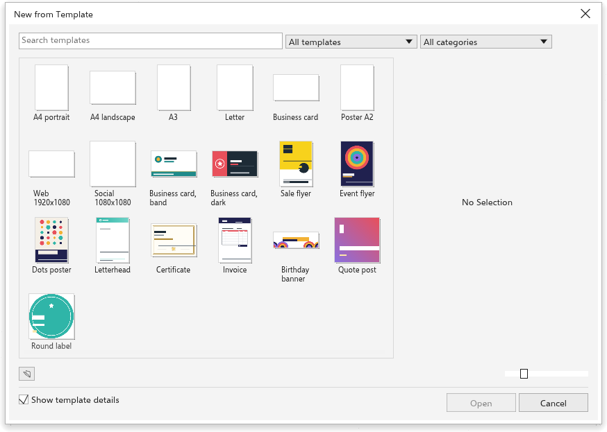

Эта страница ещё не переведена и показана на английском.
Templates
A template is a drawing to start from: a blank page of a common size, or a designed business card, flyer, poster, letterhead or label to fill in. Opening a template makes a new, untitled drawing; the template itself never changes.
Starting from a template
- Choose File > New from Template, or click New from Template on the Welcome Screen.
- Find a template:
- type in Search templates to match names and categories;
- choose where templates come from: All templates, Built in or My templates;
- choose a category, or All categories.
- Click a template to see it. With Show template details on, the pane on the right shows it large with its Category, Page size and Source.
- Click Open, double-click the template, or press Enter.
The Size slider at the bottom makes the thumbnails larger or smaller, and Open template opens any .tdt or .tdraw file as a template.

The built-in templates
- Blank pages: A4 portrait and landscape, A3, Letter, business card (90 by 50 mm), A2 poster, web (1920 by 1080 pixels) and social media (1080 by 1080 pixels).
- Designed: two business cards, a sale flyer and an event flyer, a poster, a letterhead, a certificate, an invoice, a birthday banner, a quote post and a round label. They are made of ordinary shapes and text with sample text, so you can change every part.
Saving your own templates
- Make the drawing you want to start from in the future.
- Choose File > Save as Template.
- Give it a name and save it.
Templates you save appear under My templates. They are kept in the templates folder of your settings, so they are not available in the browser version.